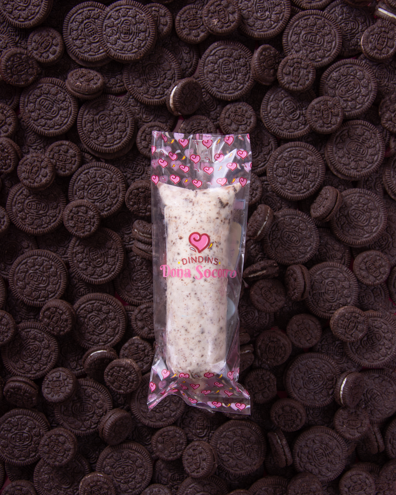

Dindins Dona Socorro
Geladinhos gourmet artesanais, feitos com qualidade, carinho e sabores que despertam memória afetiva desde 1994.
Conheça nossos sabores
Geladinhos gourmet artesanais, feitos com qualidade, carinho e sabores que despertam memória afetiva desde 1994.
Conheça nossos saboresA Dindins Dona Socorro é uma marca tradicional no segmento de gelados artesanais, reconhecida pela qualidade dos produtos, sabores diferenciados e experiência afetiva proporcionada aos consumidores.

Estamos no mercado desde 1994 com a visão empreendedora da matriarca Dona Socorro. A marca se tornou referência em dindins artesanais, sempre valorizando ingredientes de qualidade, produção criteriosa e sabores que conquistam clientes e parceiros.
Somos apaixonados por dindins e buscamos oferecer uma experiência deliciosa, refrescante e cheia de carinho.
Tradição, confiança e credibilidade no mercado de dindins artesanais.
Produtos preparados com cuidado, qualidade e muito sabor.
Combinações especiais para transformar o geladinho em sobremesa.
Escolha seu sabor favorito e aproveite uma experiência super gelada.

Banana, doce de leite, chantilly e biscoito em uma combinação cremosa e nostálgica.

Coco natural com leite, creme de leite e leite condensado. Cremoso e refrescante.

A união tropical do coco natural com pedaços suculentos de abacaxi.

Chocolate cremoso com a crocância marcante do wafer KitKat.

Doce e cítrico na medida certa, com suco da fruta e toque refrescante.

Intenso, cremoso e refrescante, com o sabor marcante do maracujá.

Feito com morangos frescos, leve, delicado e cheio de sabor.

Leite Ninho cremoso com generosas camadas de Nutella.

Base cremosa com pedacinhos crocantes de biscoito Oreo.

O clássico pudim de leite condensado com calda de caramelo artesanal.
A Dindins Dona Socorro busca ampliar sua presença digital e atrair novos franqueados e parceiros comerciais.

Clique abaixo para nos acompanhar nas redes sociais: